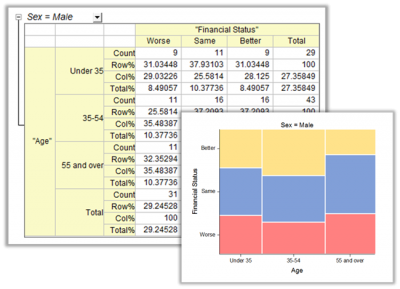
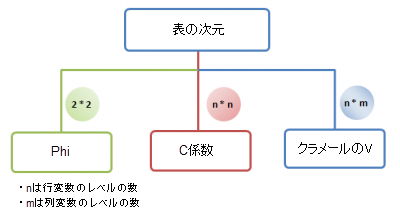

クロス集計とカイ二乗 (Proのみ)
crosstab
クロス集計とカイ二乗(分割表)は、変数の度数分布を明らかにする表です。表をベースにした分析は有意な関連性があるかどうかを決定し、関連性の強さと方向を作成して、一致対データの一致を計測して検定します。これは、カテゴリデータの分析に広く使用されています。
- 
目的
クロス集計には、大きく4つの目的があります。
- 度数分析
- 変数の度数分布を表形式で表示、カウントや割合、各セルの残差を計算します。
- 独立性検定
- 分割表内の変数間で有意な関連があるか決定します。
- 関連性の計測
- 分割表の変数間の関連の強さと方向を評価します。
- 一致の計測
- 2人の評価者や2つの評価システムの同意の度合いを検定または計測します。例えば、アンケートに答えた人が同意する、しないという選択でどのくらい矛盾していないか検討するために使用されます。
手順の流れ
分析データの準備
クロス集計とカイ二乗分析は、素データまたは度数データで実行できます。
- 素データ
- 各変数の列、観測値を示す行があります。
- 度数データ
- 各変数の列、度数の列があります。各行はグループ内のレベルを示します。度数の列はデータのレベルにおける観測値を示します。
- 例
-
分割表のために周辺およびセル統計を選択
度数
- 度数
- 各セルの観測された度数
- 期待度数
- 列と行変数が独立であるという仮定における、各説の観測された度数
パーセンテージ
- 行カウントのパーセント(Row%)
- 行合計に対する各セルカウントのパーセント
- 列カウントのパーセント(Col%)
- 列合計に対する各セルカウントのパーセント
- 合計カウントのパーセント(Total%)
- 総計に対する各セルカウントとマージンのパーセント
残差
Originは3種類の残差を提供しています。通常値が0に近いほど列と行変数は関連性がありません。 詳細については結果の解釈ページを参照してください。
- 残差
- 観測された度数と予測値された度数間の差です。
- 標準化残差
- Pearsonの残差とも呼ばれます。期待される度数の平方根で残差を割って標準化しています。
- 調整済み残差
- 全体のサンプルのサイズを考慮してさらに標準化したものです。異なるセルの残差を比較するために、最も便利な残差です。
独立性の検定手法を選択
Originは、分割表の変数間で有意な関連性があるかどうか検定する2つの方法を提供しています。
- カイ二乗検定
- 行と列変数が独立であるという仮説の検定に使用されます。
- Fisherの正確確率検定
- Fisherの正確確率検定は2*2表で利用できます。サンプルサイズが小さく(いくつかのセルが0でも)、カイ二乗検定が適さない場合に便利です。
関連性を調べるための手法を選択
名義変数の測定
測定ベースのカイ二乗
- Phi
- Phi はサンプルサイズを考慮してカイ二乗を調整する統計量です。一般に、2*2表の比較で使用されます。
- C係数
- C係数は、サンプルサイズによるカイ二乗を調整する他の統計量です。Phiと同様、異なる次元の表間で比較する際にはおすすめできません。しかし、同じ次元の表（n,m>2で同じn 及びm）では便利です。Phiと比べると、標準化された統計量なので、n > 2 および m > 2 の時の変数間の関連性を計測するために統計量を1と比較します。
- クラマーのV
- サンプルサイズと表の次元(n*m)の両方でカイ二乗を調整する統計量です。一般に、異なる次元の表間で関連性を比較するために使用されます。
-
- 
PREの測定
- ラムダ
- 誤差減少率(PRE)の測定に使用され、従属変数の予測に独立変数を使用したとき誤差を何パーセント削減したかによるものです。従属変数が独立変数から予測できない場合(ラムダ=0)、2つの変数の関連性はないことが考えられます。
- 不確かさの係数
- PREの計測手法の一つです。ラムダと比べて保守的です。
順序変数の測定
- ガンマ
- 順序変数のための伝統的な統計値です。結び付きの補正はありません。
- ケンドールのタウbタウc
- 順序変数でよく使用される統計値です。ガンマと似ていますが結び付きの補正があります。Kendallのタウbはn*n 表で、タウcはn*m 表で使用されます。
- Somer's D
- ガンマとKendallのタウb及びタウcとは異なり、SomersのDは非対称の統計量です。どの変数が他に依存しているか識別するときに適用されます。例えば、実験(1,2,3,4,5) と週ごとの研究のタイムアウト(5~10hr, 10~15hr など...)間で関連性があるかどうかを判断するため便利です。実験のスコアは従属変数で、週ごとの学校の研究のタイムアウトが変数です。
成約を調べるための手法を選択
- カッパ
- Cohenのカッパとも呼ばれます。2 つの評価者が同じ対象を評価するときに、それらの評価の一致の度合を測定します。
- Bowker検定
- McNemar-Bowkerの対称性検定とも呼ばれます。McNemar検定は2*2表で、Bowker検定はn*n 表で使用されます。 1人の評価者の各観測値が他の観測値に合致する対データの一致の度合を計測します。例えば、同じ患者のグループで評価したとき、標準の患者の評価者1の評価と標準の患者の評価者2の評価が等しいかどうかを検定します。
他の測定を選択
- オッズ比
- 2*2表で利用できます。オッズ比は、イベントが発生するオッズに対するイベントまたは結果が発生するオッズの割合を計測したものです。
- 相対危険度
- 2*2表でのみ利用できます。相対危険度は、比較グループでイベントが発生するオッズに対する1つのグループでイベントが発生するオッズの割合を計測したものです。
- Cochran-Mantel-Haenszel
- Cochran-Mantel-Haenszel 検定は、レイヤ変数の制御後に行と列変数間に関連性があるかどうか評価するために使用されます。2種類の検定（条件付き独立性検定、オッズ比の一致性検定）で構成され、共通オッズ比の推定量です。
クロス集計とカイ二乗
- 統計: 記述統計: クロス集計とカイ二乗 を選択します。
- または、
- スクリプトウィンドウでcrosstab -d と打ち込んでください。